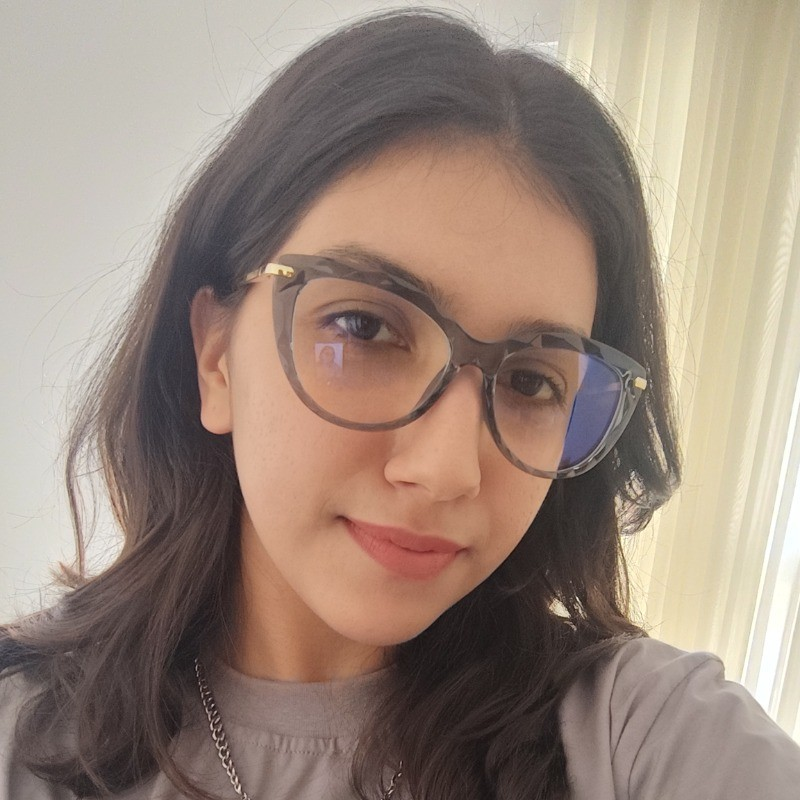

Digital Transformation Student & Front-end Developer

I am a Computer Engineering graduate and current Master's student in Digital Transformation at Dortmund University of Applied Sciences. With a strong foundation in both web and mobile front-end development, I focus on creating intuitive, high-performance user interfaces.
Babol Noshirvani University of Technology | Jan 2024 - June 2024
Saminray Company | June 2024 - Aug 2024
JavaScript, Python, Java, C++, MATLAB, HTML/CSS
React.js, React Native, Bootstrap, Git, Figma, Android Studio
Dortmund University of Applied Sciences | 2025 - 2027
Babol Noshirvani University of Technology | 2020 - 2024